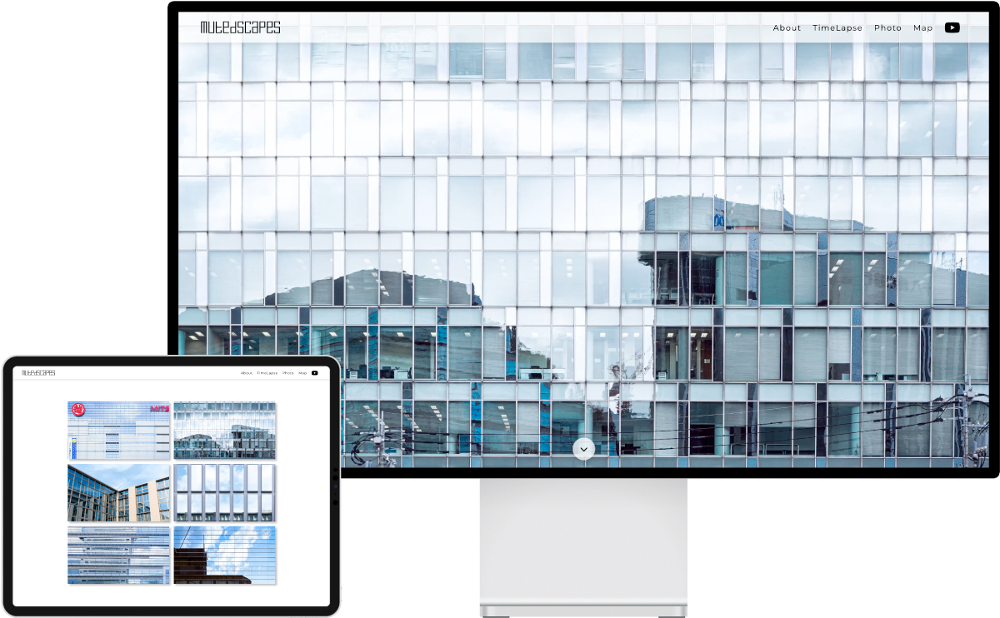
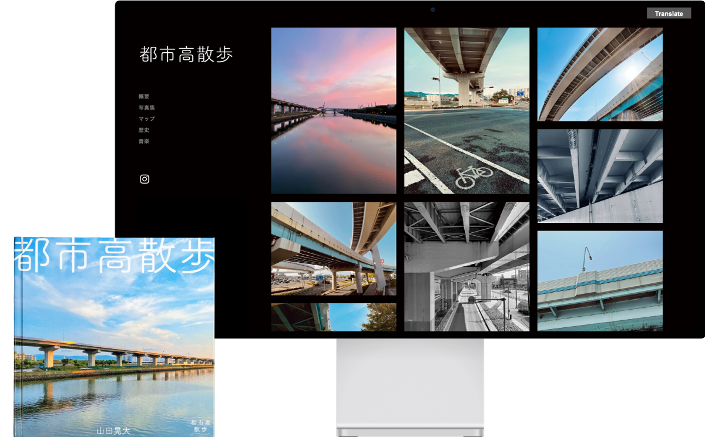

Fenestralism
「窓的思考」による曖昧さの価値の再考
窓の「透過・反射」が生む視座の揺らぎを曖昧さの象徴として捉え、新概念Fenestralismを提唱しました。合理性の追求で失われた「余白」を許容し、人々の思考力を取り戻す試みです。

Mutedscapes
ビルに反射する景色を記録・表現する
「人工物・自然」「静止・流動」という両軸の対比を目的とし、タイムラプスと写真を撮影しました。相反する要素を融合させることで相乗効果を生み、新たな美しさを表現しています。

都市高散歩
都市高速の造形美と老朽化を伝える
都市高速の高架に焦点を当て、その造形美と老朽化を写真で記録しました。関心の向きにくい社会問題に対し、Webサイトと写真集という異なる媒体を併用し多角的な情報発信を行いました。
